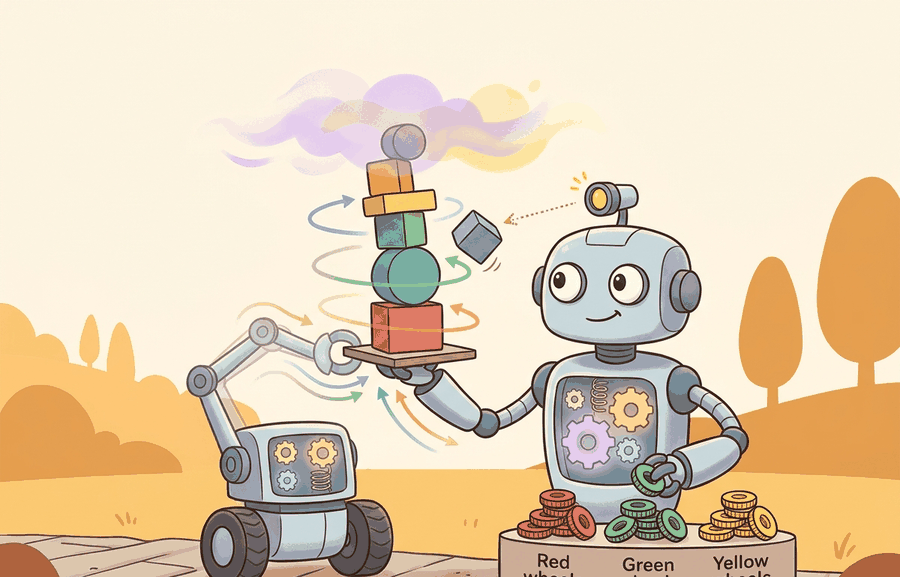

"P reacts to now, I confesses to the past, D worries about what comes next. Together they argue until the error is small enough to ignore."
A PID Tuner at 2 AM

This section assumes familiarity with error dynamics and the concept of overshoot introduced in section 7.2. The three-term structure developed here becomes the inner control loop that learned planners command in section 21.2 and section 26.1, so the gain-tuning intuition from section 7.3 directly supports understanding why those higher-level policies need a stable, fast inner loop beneath them.
PID control, intuition and tuning is one lens on Control for AI Practitioners. We study it because an embodied agent needs decisions that survive contact with noisy sensors, delayed effects, and changing environments.
This section develops the technical contract for PID control, intuition and tuning into a usable mental model. First we define the object of study, then we connect it to the agent loop, then we test it with a compact implementation.
The key question in PID control, intuition and tuning is practical: what must the agent know, what can it observe, what action is available, and what evidence shows that the action worked under the stated conditions?
A representation earns its place when it changes the measurable action interface. In PID control, intuition and tuning, the reader should keep asking which decision becomes easier, safer, or more reliable.
Theory
Consider a robotic arm holding its end-effector at a target joint angle. The motor driver needs a torque command every millisecond. A neural policy trained offline cannot react to an unexpected cable-friction spike in that loop; a full dynamics model is too slow to invert online. PID solves this exactly: it reads the current angle, computes how far off it is, and issues a corrective torque in under a microsecond, with no model needed. That is the role PID fills in embodied AI: fast, interpretable, actuator-level error correction that runs inside the loop while slower learned planners operate above it.
For PID control, intuition and tuning, the practical design rule is to make the interface inspectable before optimization begins: inputs, outputs, units, latency, bounds, and failure labels should all be visible in the saved artifact.
PID control is useful because it gives three readable levers before a learned policy enters the loop. The proportional term reacts to the current error, the integral term removes persistent bias, and the derivative term resists fast changes that would otherwise overshoot. A tuning pass should change one lever at a time and record rise time, overshoot, settling time, steady-state error, saturation events, and noise sensitivity.
Start with $K_i=0$ and $K_d=0$, raise $K_p$ until the response is fast but not oscillatory, then add a small $K_d$ if overshoot is too high. Add $K_i$ last, only when a steady bias remains, and clamp the integral accumulator whenever the actuator saturates. This order keeps proportional behavior, damping, and bias correction separate enough to debug.
The mechanism in PID control, intuition and tuning is the contract between representation and action. Name what enters the module, what leaves it, which assumptions make that transformation valid, and which log would reveal a bad handoff.
Worked Example
PID has three classic failure modes, and each one is reproducible in a few lines on the same 1D mass. Code Fragment 7.3.1 exposes all three: integral windup (a large \(K_i\) keeps charging while the actuator saturates, then overshoots), derivative kick (a step change in the setpoint makes \(\dot e\) spike, so a derivative computed on the error fires a huge first command), and derivative noise (differentiating a noisy measurement amplifies the noise). The fixes are an anti-windup clamp and computing the derivative on the measured output rather than on the error.
import numpy as np
m, dt, T = 1.0, 0.02, 5.0
n = int(T / dt)
u_max = 6.0
def run(kp, ki, kd, anti_windup=True, deriv_on_meas=False, ref=1.0):
x = v = ei = 0.0
e_prev = y_prev = 0.0 # e_prev = 0 so the setpoint step shows the kick
overshoot, first_cmd = 0.0, None
for k in range(n):
y = x # measured position
e = ref - y
ei_t = ei + e * dt
# Derivative on measurement avoids the spike when the setpoint jumps.
de = -(y - y_prev) / dt if deriv_on_meas else (e - e_prev) / dt
u_unsat = kp * e + ki * ei_t + kd * de
u = float(np.clip(u_unsat, -u_max, u_max))
if (not anti_windup) or (u == u_unsat): # anti-windup clamp
ei = ei_t
if first_cmd is None:
first_cmd = u_unsat
x += v * dt; v += (u / m) * dt
overshoot = max(overshoot, x - ref)
e_prev, y_prev = e, y
return x, overshoot, first_cmd
xf, ov, _ = run(10, 3, 5)
print(f"tuned : final={xf:.3f} overshoot={ov:.3f}")
_, ov_off, _ = run(10, 30, 5, anti_windup=False)
_, ov_on, _ = run(10, 30, 5, anti_windup=True)
print(f"windup off/on : overshoot {ov_off:.3f} -> {ov_on:.3f} with anti-windup clamp")
*_, kick_e = run(10, 3, 5, deriv_on_meas=False)
*_, kick_m = run(10, 3, 5, deriv_on_meas=True)
print(f"setpoint step : first command {kick_e:.1f} (deriv on error) vs {kick_m:.1f} (deriv on measurement)")In ROS 2 control's PidController, set use_feedforward_command: false and enable derivative_on_measurement in the YAML hardware interface config rather than patching the derivative term by hand. This single parameter switch eliminates the setpoint-step kick that produces the 260-unit first command shown above. If you are using python-control's pid_designer, note that it returns continuous-time gains; discretizing with sample_system(sys, dt, method='bilinear') before deploying avoids gain inflation at fast sample rates, which otherwise mimics integral windup even when your clamp is correct.
The fragment should expose proportional, integral, and derivative terms separately, including windup and derivative noise. ROS 2 control and hardware logs then show whether tuning survives saturation and delay.
Practical Recipe
- Write the observation, action, and success metric before choosing a model.
- Build a baseline that is simple enough to debug by inspection.
- Add the library implementation only after the baseline behavior is understood.
- Record failures as structured cases: perception error, state error, planning error, control error, or evaluation error.
- Run at least one perturbation test before trusting the result.
The common mistake in PID control, intuition and tuning is to celebrate the component score before checking the closed-loop handoff. The failure usually appears at the boundary: stale state, wrong frame, delayed action, saturated actuator, or metric that ignores the real task cost.
A quadrotor holding 1.5 m altitude uses a vertical-velocity PID with $K_p = 4.0$, $K_i = 0.8$, $K_d = 1.2$ (values from the PX4 default parameter set for a 500 g airframe). The integral term removes the steady hover bias caused by battery voltage sag; the derivative term damps the bounce when a gust pushes the vehicle up and motor thrust overshoots. Logging throttle commands, IMU vertical acceleration, and integral accumulator value together reveals whether a sustained oscillation comes from a noisy accelerometer (derivative problem) or from a slow bias that the integrator is fighting (windup risk). This is the same diagnostic loop that applies to any joint-level PID on a robot arm, a wheel-speed controller on a mobile base, or a temperature loop in a soft actuator.
A good embodied system makes pid control, intuition and tuning visible twice: once in the design sketch and once in the replay artifact. The second view keeps the first one honest.
For PID control, intuition and tuning, treat frontier claims as hypotheses until they expose enough detail to reproduce the result: data boundary, embodiment, controller interface, evaluation panel, and failure cases.
Can you name the observation, state estimate, action, success metric, and most likely failure mode for PID control, intuition and tuning? If not, the system boundary is still too vague.
Production Pattern
PID control, intuition and tuning sits inside the Part II robotics contract: geometry defines where things are, kinematics defines what motion is possible, dynamics defines what motion costs, control defines how errors are corrected, and sensing defines what the agent can know on time.
Tune PID by reading proportional, integral, and derivative effects separately before combining them. This makes the section useful to students, builders, and researchers at the same time: the idea has an intuitive role, a formal interface, a runnable check, and a failure mode that can be reproduced.
For PID control, intuition and tuning, control closes the loop between estimated state and action. Keep reference, measured state, error signal, control law, actuator limits, and safety fallback separate in the evidence record.
| Tool or Library | What It Handles | Verification Check |
|---|---|---|
| python-control | analyzes linear systems, transfer functions, state-space models, and feedback loops | Verify units, sample time, poles, stability margin, and reference scaling. |
| CasADi | formulates optimization-based controllers with constraints and horizons | Verify constraints, warm start, solver status, and deadline behavior. |
| Drake | models dynamical systems, multibody plants, optimization, and controllers | Verify scalar type, plant finalization, frame convention, and solver status. |
| do-mpc | formulates optimization-based controllers with constraints and horizons | Verify constraints, warm start, solver status, and deadline behavior. |
| ROS 2 control | supports practical work on PID control, intuition and tuning | Verify the library output against the hand-built baseline on one small case. |
Use this recipe when turning PID control, intuition and tuning into code, a simulator experiment, or a robot diagnostic. The point is not to use every library. The point is to keep the hand-built baseline and the maintained-tool path comparable.
- Write the control objective, measured state, actuator command, update rate, and saturation policy.
- Run a step-response test before adding learning, with overshoot, settling time, and steady-state error logged.
- Compare the hand controller with python-control, CasADi, Drake, do-mpc, or ROS 2 control on the same plant model.
- Record latency, missed deadlines, saturation events, constraint violations, and recovery actions.
- Only compare controllers and policies when they share sensors, action limits, disturbance tests, and safety checks.
For PID control, intuition and tuning, compare methods only through one saved artifact that preserves the inputs, outputs, units, timestamps, latency budget, configuration, seed, metric definition, and failure labels relevant to this section. The comparison is meaningful only when the same script evaluates the same panel.
Extend the section exercise by adding one perturbation specific to PID control, intuition and tuning and one latency or uncertainty check. Save the result in the EvidenceRecord schema, then explain which library output you trust and why.
A learned policy can hide an unstable PID inner loop until the disturbance changes. Check update rate, delay, actuator saturation, integral windup, derivative noise, and fallback behavior before scaling training. For this section, first reproduce one tiny PID update by hand, then rerun it through python-control or the robot controller stack. If the two disagree, inspect sign convention, sample time, derivative filtering, and anti-windup behavior before changing the model.
Technical Core
PID control, intuition and tuning needs a topic-native core: variables, equations or system contracts, an algorithmic procedure, an expected output, and a failure diagnosis. Figure 7.3.T summarizes the chain this section must preserve when moving from a teaching example to a real embodied system.
$u_t=K_p e_t+K_i\sum_{\tau\le t}e_\tau\Delta t+K_d(e_t-e_{t-1})/\Delta t$. $K_p e_t$ pushes toward the target now, $K_i$ accumulates leftover bias over time, and $K_d$ damps motion by reacting to the error slope. The formula assumes a fixed sample interval $\Delta t$ and a sign convention where positive error should produce positive corrective action.
Code Fragment 7.3.3 below turns the PID equation into one numeric update. The values are small enough to check by hand: proportional action contributes $0.8$, integral action contributes $0.6$, and derivative action contributes $-0.2$ because the error is already falling.
# Compute one PID update from current error, accumulated error, and error slope.
# The sign of the derivative term shows whether the controller is damping the motion.
error_prev = 0.6
error_now = 0.4
integral_error = 1.2
dt = 0.1
kp, ki, kd = 2.0, 0.5, 0.1
derivative = (error_now - error_prev) / dt
command = kp * error_now + ki * integral_error + kd * derivative
print(f"derivative={derivative:.1f}, command={command:.1f}")error_now, integral_error, and derivative. The negative derivative contribution shows the damping effect that reduces overshoot when the error is already shrinking.- Define the reference, measured state, error signal, actuator command, update rate, and saturation policy.
- Run a step or disturbance response before adding learning.
- Log overshoot, settling time, steady-state error, latency, saturation, and recovery behavior.
- Compare PID, LQR, or MPC only under the same plant, sensors, limits, disturbance panel, and metric code.
| Contract Field | What To Specify | Why It Matters |
|---|---|---|
| State and observation | Variables, units, timestamps, frames, and uncertainty. | Prevents a model score from being mistaken for robot capability. |
| Action interface | Command type, limits, update rate, and safety fallback. | Makes the learned or planned output executable. |
| Evidence artifact | Trace, metric, configuration, seed, and failure label. | Allows baseline and library path to be compared in one pass. |
| Tool path | python-control, CasADi, do-mpc, Drake, ROS 2 control, MuJoCo | Shows the practical library route after the mechanism is understood. |
For PID control, intuition and tuning, expected output is a trace where the relevant error decreases, overshoot stays within the design bound, and actuator commands remain within limits under the stated timing budget.
PID control, intuition and tuning should be stress-tested under delay, integral windup, actuator saturation, unmodeled friction, and reference-frame mismatch before the nominal trace is trusted.
Section References
Core references for PID control, intuition and tuning: Modern Robotics; Murray, Li, and Sastry; Siciliano et al.; LaValle; and official documentation for Drake, MuJoCo, Pinocchio, CasADi, python-control, GTSAM, ROS 2, and OpenCV as applicable.
Use these references to check notation, frame conventions, units, solver assumptions, and maintained-library behavior.
PID control, intuition and tuning is useful when it makes the perception-action loop more reliable, not when it merely adds a more impressive model name.
Design a method-matched experiment for PID control, intuition and tuning. Specify the environment, observations, actions, metric, one perturbation, and the library output you would compare against the hand-built baseline.